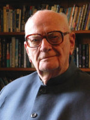

(1917 – 2008)

Benzersiz hayal gücüyle geleceği daha yaşanmadan anlatan ender zekalardandı Arthur C. Clarke. Yıldızlararası yolculukları anlattığı romanlarda adeta "geleceğin tarihi"ni yazar gibiydi.
Romanlarında "Arthur C. Clarke" adını kullanan Arthur Charles Clarke, İngiltere'nin Somerset eyaletinin Minehead kıyı kasabasında, 16 Aralık 1917 tarihinde doğdu. Çocukken gökyüzünü gözlemlemekten ve eski Amerikan bilimkurgu dergilerini okumaktan büyük keyif alan Clarke, liseyi bitirdikten sonra Richard Huish Üniversitesi'nde okumaya başladı; fakat maddi sorunları yüzünden üniversite eğitiminin masraflarını karşılamakta zorluk çekince okul yurdunda denetçi olarak işe başladı.
Clarke, 1941–1946 yılları arasında Kraliyet Hava Kuvvetleri'nde radar eğitmeni ve teknisyeni olarak çalıştı. 1945 yılında teklif ettiği "uydu iletişim sistemi" önerisinden dolayı 1963'te Franklin Institute Stuart Ballantine'den altın madalya kazandı.
II. Dünya Savaşı sırasında Kraliyet Hava Kuvvetleri'nin geliştirdiği "erken radar uyarı sistemi" projesinde görev aldı ve savaşın bitimiyle ordudan teğmen rütbesiyle ayrıldı. Savaşın ardından girdiği King's College'ın Matematik ve Fizik bölümlerini birincilikle bitirdi. Savaş sonrası yıllarda (1947–1950 yılları arasında) ve daha sonra tekrar 1953'te British Interplanetary Society'nin (İngiliz Gezegenlerarası Topluluğu) başkanlığını yaptı. Dünyayı çevreleyen telekomünikasyon uydu ağının oluşturulması için gerekli geostasyonel uydu fikrini öne sürdü.
1953 yılında Florida'ya yaptığı gezi esnasında tanıştığı 22 yaşındaki tek çocuklu bir dul olan Amerikalı Marilyn Mayfield ile evlendi. Altı ay sonra ayrıldılar. Boşanma davaları 1964'e kadar sürdü. Clarke evliliği hakkında "Başından beri uyumsuz bir evlilikti" dedi. Bir daha hiç evlenmedi, fakat Cennetin Kaynakları adlı romanını ithaf ettiği ve "yaşam boyunca mükemmel arkadaş" diye tarif ettiği Sri Lankalı Leslie Ekanayake isimli bir erkekle yakın bir ilişki yaşadı. Kendisinden yaklaşık otuz yıl önce ölen Ekanayake ile Colombo'da aynı yere gömüldü. Stanley Kubrick'in biyografisinde, Clarke'ın Sri Lanka'ya yerleşme sebebi olarak Sri Lanka kanunlarının eşcinselliğe daha hoşgörülü olması gösterilir. Clarke, kendisinin eşcinsel olup olmadığını soran gazetecilere "Hayır, sadece ılımlı eşcinselim" demiştir. Michael Moorcock, yazdığı bir yazıda "Onun eşcinsel olduğunu herkes biliyordu. 1950'lerde erkek arkadaşıyla birlikte yemeğe giderdik" demiştir. Clarke, 1986 yılında Playboy dergisine verdiği bir röportajda kendisine yöneltilen "Hiç homoseksüel ilişki yaşadınız mı?" sorusuna "Elbette. Kim yaşamamıştır ki?" şeklinde cevap vermiştir.
Clarke'ın hatıralarını yazdığı bir koleksiyon da mevcuttur. Bu hatıralar, İngiltere'deki kardeşi Fred Clarke tarafından saklanmaktadır. Clarke, günlüklerinin ve hatıralarının ölümünden otuz yıl sonra yayımlanacağını belirtmiştir. Nedeni sorulunca "İçeriğinde utandırıcı şeyler olabilir" demiştir.
1998 yılında İngiliz Krallığı tarafından şövalye ilan edildi ve 2005 yılında Sri Lanka'nın en yüksek sivil onuru olan Sri Lankabhimanya ile onurlandırıldı. Yazar ayrıca aralarında Hugo Ödülü ve Nebula Ödülü de bulunan onlarca ödül aldı hatta kendi adına da her yıl en iyi bilimkurgu yazarına verilen Arthur C. Clarke Ödülleri düzenlendi.
Çocukluğunda yakalandığı bir hastalık nedeniyle yaklaşık otuz yıl tekerlekli sandalye kullanan Clarke, 50 yıl yaşadığı Sri Lanka'da ölümünden dört gün önce hastaneye kaldırıldı; fakat 19 Mart 2008 günü solunum yetmezliği sonucu hayatını kaybetti.
Clarke, Alan Watts ile yaptığı söyleşide savaşları ve zulümleri bunca zaman durduramadıkları için dinleri affetmediğini söylemiş ve cenaze töreniyle ilgili bıraktığı vasiyette: "Cenazemde kesinlikle dini herhangi bir tören düzenlenmesin" demiştir. Clarke'ın en meşhur sözlerinden biri şudur: "İnsanlığın en büyük trajedilerinden biri ahlakın din tarafından ele geçirilmesidir."
Seçme Romanları: Mars'ın Kumları (1951), 2001: Bir Uzay Efsanesi (1968 – İthaki Yayınları, 2009), Rama İle Buluşma (1972), Cennet Pınarları (1979), 2010: Uzay Efsanesi 2 (1982 – İthaki Yayınları, 2001), 2061: Uzay Efsanesi 3 (1987 – İthaki Yayınları, İstanbul, 2000), 3001: Son Efsane (1997)